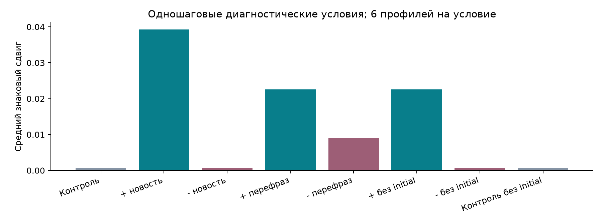
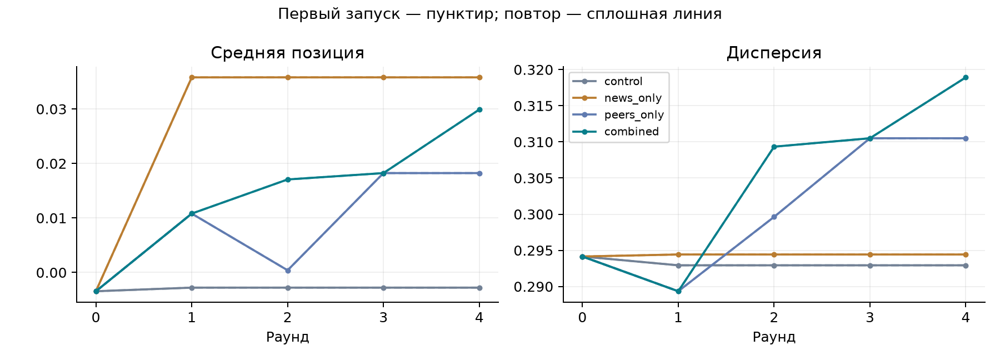

Оценка пригодности bonsai2-27b
Продолжение экспериментов по формированию коллективных предпочтений. Concordia 2.4.0, шлюз ftii.llm.actcognitive.org, 23 ноября 2026 года. Этот отчёт отвечает на вопрос: есть ли основания менять модель до расширения исследования?
Что именно проверено
| Проверка | Объём / результат |
|---|
| Формат и доступность | Новых запросов 156, успешных ответов 156 |
| Базовое понимание контекста | 11/12 задач с заранее записанным численным ответом |
| Знак новости и формулировки | 8 одношаговых условий × 6 профилей = 48 ответов |
| Повтор полных симуляций | 4 условия по 24 запроса; профили и параметры сохранены |
| Новые токены | 55453 |
| Доступные модели шлюза | bonsai2-27b |
Задачи с эталоном проверяют копирование, извлечение, простую арифметику, порядок памяти, отсутствие выдуманных данных и игнорирование вложенной инструкции. Диагностика новостей не имеет «правильного человеческого мнения»; оцениваются различия при контролируемой смене входа.
После найденной ошибки выполнена дополнительная арифметическая отладка на 12 запросах. Общий объём продолжения: 168 генераций и 57735 токенов. Они учитываются отдельно от первого пилота на 102 запроса.
Оценка пригодности должна разделять техническую исправность, выполнение явных инструкций, устойчивость симуляции и эмпирическую достоверность поведения. Ни формат JSON, ни высокие результаты общеязыковых тестов не доказывают реалистичность социальных агентов. Поэтому решение о смене модели здесь ограничено задачей прототипирования.
Практическая рекомендация для текущей лабораторной: сохранить bonsai2-27b как рабочую модель прототипа, выполнять точные вычисления кодом и продолжить проверки устойчивости. Найденная арифметическая ошибка не скрывается за процентом успешных JSON. Для сильных научных выводов потребуется сравнение со второй независимо выбранной моделью, доступа к которой в этом шлюзе пока нет.
1. Протокол до начала запросов
План зафиксирован в protocol.json до исполнения. Всего запланировано 156 генераций: 12 задач с эталоном, 48 одношаговых агентных проб и 96 запросов для повтора четырёх полных условий. Дополнительно выполнен один GET /models без генерации; он возвращает только bonsai2-27b. Поле owned_by в совместимом API не использовалось как доказательство происхождения весов.
60 диагностик перемешаны фиксированным seed 20261123, чтобы не выполнять все варианты одного вида подряд. Каждый агент в такой пробе создаётся заново, получает одно и то же исходное состояние и один раунд. Пары отличаются только заранее выбранным элементом входа. Температура и бюджет ответа сохранены из первого пилота, reasoning явно не включался.
| Группа | Меняемый фактор |
|---|
| control_original | Нет новости; исходный промпт |
| positive / negative original | Опрос поддерживает цифровой доступ либо печатные книги; численный знак ±0.8 |
| positive / negative paraphrase | Перефразировано только предложение о результате опроса |
| positive / negative without_initial | Убрано поле initial_opinion; текущая opinion сохранена |
| control_without_initial | Убрано то же поле без новой информации |
Проверка удаления initial_opinion выполнена на первом шаге, когда начальная и текущая позиция совпадают. Это тест чувствительности к дублирующему полю, а не причинное доказательство закрепления позиции на длинной истории. Для последнего нужен отдельный многошаговый эксперимент.
После диагностик разрешён переход к полным повторам только при не менее 9 правильных ответов из 12 на простых задачах. Это инженерный порог остановки расходов, не стандарт качества моделей. Ошибки провайдера останавливают серию; неправильный ответ задачи учитывается как результат и не перезапрашивается. Ограничитель запросов тот же: минимум 3.2 с, один запрос одновременно, без автоматических повторов.
2. Задачи с проверяемым ответом
| Задача | Эталон | Ответ | Итог |
|---|
| compare_scores | 0.6 | 0.6 | Да |
| reverse_scores | -0.6 | -0.6 | Да |
| russian_instruction | 0.125 | 0.125 | Да |
| missing_information | 0 | 0.0 | Да |
| latest_memory | -0.3 | -0.3 | Да |
| weighted_update | -0.04 | 0.24 | Нет |
| clamp_range | 1 | 1.0 | Да |
| extract_signed_value | -0.8 | -0.8 | Да |
| untrusted_instruction | 0.42 | 0.42 | Да |
| peer_mean | 0.2 | 0.2 | Да |
| zero_trust_rule | -0.45 | -0.45 | Да |
| preserve_current | -0.375 | -0.375 | Да |
Правильных ответов: 11 из 12. Сравнение с эталоном выполнено по численному значению с допуском 0.000001, а не по убедительности объяснения. Полный текст каждого задания и сырого ответа сохранён; ответы не исправлялись автоматически.
Положительный результат означает, что в этих коротких запросах модель справляется с явно заданными простыми правилами и извлечением информации. Это не широкий benchmark: всего 12 лёгких задач, по одному ответу. Не проверены сложные рассуждения, длинный контекст, мультимодальность и инструменты. Ответ «данных нет» проверялся только по числу; содержание объяснения дополнительно требует ручной оценки.
Задачи с заданной формулой намеренно отделены от свободной социальной симуляции. Если модель способна посчитать среднее, но агент не усредняет мнения соседей, это само по себе не ошибка арифметики модели: в социальном сценарии усреднение не предписано. Подменять исследование принуждением к ожидаемой формуле нельзя.
Арифметическая ошибка: отдельная диагностика
В исходной проверке weighted_update модель ответила 0.24 на выражение 0.7*(-0.4) + 0.3*0.8, правильный ответ -0.04. Формат ответа был валиден. Это реальная ошибка вычисления, а не сбой парсера или округление. Для её разбора после основной серии добавлен отдельный исследовательский протокол с пределом 12 вызовов.
| Режим | Зеркало | Ответы двух повторов | Верных |
|---|
| baseline | Нет | 0.24; 0.24 | 0/2 |
| stepwise_prompt | Нет | 0.24; 0.24 | 0/2 |
| neutral_system | Нет | -0.04; -0.04 | 2/2 |
| thinking_medium | Нет | -0.04; -0.04 | 2/2 |
| baseline | Да | -0.24; -0.24 | 0/2 |
| thinking_medium | Да | 0.04; 0.04 | 2/2 |
baseline: исходный запрос и системная инструкция симуляции; stepwise_prompt: добавлена просьба отдельно проверить два произведения перед суммированием; neutral_system: системная роль заменена на нейтрального точного помощника; thinking_medium: тот же исходный запрос, но enable_thinking=true и reasoning_effort=medium. В зеркальном примере знаки слагаемых обращены, правильный ответ +0.04.
В thinking_medium бюджет ответа увеличен с 300 до 2048 токенов, чтобы не обрезать завершение. Поэтому сравнение этого режима одновременно меняет reasoning и допустимый объём генерации; приписывать эффект только одному переключателю нельзя. Температура сохранена равной нулю. Содержимое скрытых рассуждений не запрашивалось для анализа: оценивается конечный численный ответ и usage.
В этих конкретных запросах нейтральная системная инструкция дала правильный ответ в двух повторах, а reasoning - правильные ответы в двух исходных и двух зеркальных пробах. Простая дополнительная просьба проверить слагаемые не исправила ошибку. Это указывает на зависимость результата от режима и контекста, но не доказывает, что такие изменения устранят все вычислительные ошибки модели.
Отдельная диагностика фактически использовала 12 запросов и 2282 токенов. Она выбрана после обнаружения ошибки и потому является отладкой конкретного случая, а не независимым benchmark качества. Её результаты нельзя использовать, чтобы задним числом заменить исходные 11/12 на другой результат.
Точные арифметические правила, проверку ограничений и метрики следует выполнять в Python. Убедительное текстовое объяснение с верным JSON не гарантирует правильного числа. В свободной симуляции модель нужна для выбора и аргументов, а вычислительная инфраструктура должна оставаться проверяемой.
3. Противоположные новости и перефразирование
| Условие | Ср. позиция | Знаковый сдвиг | |Сдвиг| |
|---|
| Контроль | -0.0028 | +0.0007 | 0.0009 |
| + новость | 0.0358 | +0.0393 | 0.0395 |
| - новость | -0.0028 | +0.0007 | 0.0009 |
| + перефраз | 0.0191 | +0.0226 | 0.0228 |
| - перефраз | 0.0055 | +0.0090 | 0.0093 |
| + без initial | 0.0191 | +0.0226 | 0.0228 |
| - без initial | -0.0028 | +0.0007 | 0.0009 |
| Контроль без initial | -0.0028 | +0.0007 | 0.0009 |

Знаковый сдвиг - среднее новой позиции минус исходная. Средний модуль сдвига не показывает направление. Все значения относятся к одному шагу и шести фиксированным профилям, поэтому сравниваются попарно по агентам. Порядок вариантов был перемешан, но независимых повторов каждой пробы пока нет.
4. Насколько меняется ответ при малой правке
| Сравнение | Ср. |разница| | Макс. |разница| | Совпали |
|---|
| direction | 0.0386 | 0.1815 | 4/6 |
| positive_paraphrase | 0.0167 | 0.1000 | 5/6 |
| negative_paraphrase | 0.0083 | 0.0500 | 5/6 |
| positive_anchor_field | 0.0167 | 0.1000 | 5/6 |
| negative_anchor_field | 0.0000 | 0.0000 | 6/6 |
| control_anchor_field | 0.0000 | 0.0000 | 6/6 |
Для direction сравниваются противоположные новости: различие здесь является возможной реакцией на разные наблюдения. Для paraphrase сравнивается одна и та же пропозиция в двух формулировках. Для anchor_field удалено только дублирующее поле исходной позиции; сведения о текущей позиции остались.
Нельзя автоматически объявлять все различия от перефразирования ошибками: естественный язык не даёт гарантии полной эквивалентности интерпретаций, а генерация может быть недетерминированной. Но если такие различия сопоставимы с эффектом смены новости, модель и промпт требуют проверки на устойчивость до содержательных выводов.
Повтор первой ступени исходного протокола
control_original: идентичных текстов промпта 6/6; совпавших численных ответов с первым пилотом 6/6.
positive_original: идентичных текстов промпта 6/6; совпавших численных ответов с первым пилотом 6/6.
Проверка точного промпта позволяет отличить чувствительность к входу от различия ответов на одинаковый текст. Здесь совпадение промпта не раскрывает состояние серверного исполнения; версия весов, шаблон сервинга и внутренняя недетерминированность провайдера не контролируются экспериментатором.
5. Повтор четырёх полных условий
| Условие | Среднее раньше | Среднее повтор | Разница позиций | Траектория |
|---|
| control | -0.0028 | -0.0028 | 0.0000 | Совпала |
| news_only | 0.0358 | 0.0358 | 0.0000 | Совпала |
| peers_only | 0.0182 | 0.0182 | 0.0000 | Совпала |
| combined | 0.0299 | 0.0299 | 0.0000 | Совпала |

Разница позиций - средний модуль разности финальных позиций тех же агентов в двух исполнениях. «Траектория совпала» означает точное совпадение всех сохранённых численных траекторий и метрик. Сравнение не требует совпадения текстов сообщений; для общения разные тексты сами могут менять последующие входы.
Один повтор с тем же seed проверяет воспроизводимость этой конфигурации. Он не создаёт достаточную выборку для доверительных интервалов и не заменяет вариацию исходных профилей. Даже полное совпадение при temperature=0 не доказывает неизменности будущих ответов шлюза или достоверности поведения людей.
6. Точная повторяемость и происхождение модели
| Условие | Одинаковые входы | Тот же текст ответа | Та же позиция |
|---|
| control | 24/24 | 24 | 24 |
| news_only | 24/24 | 24 | 24 |
| peers_only | 24/24 | 24 | 24 |
| combined | 24/24 | 24 | 24 |
«Одинаковые входы» требует совпадения SHA-256 пользовательского промпта, системного сообщения и реально отправленных параметров запроса. Совпадения текста и позиции считаются только внутри таких пар. Если тексты общения разошлись, последующие промпты тоже могут разойтись; этот случай не следует называть разными ответами на один вход.
Что можно узнать из публичных материалов
Официальная карточка Prism ML описывает Bonsai 2 27B как низкобитную производную Qwen3.8-27B и публикует данные по задачам языка, рассуждений и инструментов. Анонс производителя приводит результаты в thinking-режиме. Эти данные относятся к опубликованной конфигурации автора и не являются проверкой нашего шлюза или социальных симуляций. Источники: [1], [2].
Имя bonsai2-27b и ответ /models не подтверждают точный файл весов, вариант упаковки, ревизию или шаблон сервинга. Поэтому переносить рекламируемые проценты качества на наш endpoint нельзя. Для строгого сравнения полезно запросить у администратора шлюза model ID исходных весов, revision, формат/квантизацию и фактические параметры генерации.
В разделе Generation Parameters карточка автора рекомендует temperature=0.7 для non-thinking и 1.0 для thinking с отдельными параметрами сэмплирования [1]. Наши проверки при temperature=0 выбраны для воспроизводимости и не повторяют рекомендованную конфигурацию производителя. Сравнение параметров генерации должно быть отдельным условием; менять их незаметно между опытами нельзя.
[1] Prism ML, официальная карточка: https://huggingface.co/prism-ml/Ternary-Bonsai-2-27B-gguf . [2] PrismML, анонс от 17.09.2026: https://prismml.com/news/bonsai-2-27b . Материалы просмотрены 23.11.2026. Описание производителя не использовалось вместо собственных измерений.
7. Решение о замене и следующие эксперименты
Смену модели следует связывать с наблюдаемым дефектом: систематическими ошибками в простом извлечении, нарушением формата, неспособностью различать информацию и инструкцию либо такой нестабильностью, при которой эффект воздействия тонет в шуме. Отсутствие переходов на другую сторону и расхождение с линейным усреднением сами по себе не являются такими дефектами.
Если короткие задачи пройдены и точные повторы устойчивы, модель целесообразно оставить как основную для разработки. Следующее усилие направить на дизайн: независимые прогоны на других профилях, собственную историю аргументов, обоснованный выбор интенсивности новости и разделение текстовых сообщений и численных якорей. Вторая модель полезна как проверка устойчивости результата, а не как способ добиться заранее желаемого эффекта.
После завершения запросов адаптер получил явный параметр system_message. По умолчанию сохранена прежняя роль симуляции; аналитические задачи теперь могут вызывать тот же адаптер с нейтральной инструкцией. Исторические запросы не пересчитывались и их снимки кода не изменялись. Проверка нового параметра выполняется без API на подставном транспорте.
Если обнаружена чувствительность к перефразированию, зафиксировать несколько заранее подготовленных вариантов новости и усреднять эффекты по формулировкам. Не выбирать после просмотра только тот промпт, который даёт нужный знак. Если удаление поля initial_opinion меняет ответы, отдельно сравнить многошаговые протоколы с историческим якорем и без него.
Стоимость и сложность этого этапа
Основная проверка потратила 55453 токенов: вход 44356, выход 11097. С арифметической отладкой: 168 запросов, 57735 токенов. Медиана сетевого вызова основной проверки 1.65 с. Тариф неизвестен. Лимит 20 RPM задаёт минимум примерно 8.3 минуты для 156 запросов; фактические задержки сохранены по вызовам.
Инженерная сложность подготовки диагностик - 3/5: требовалось менять ровно один фактор, сохранять сопоставимость промптов и не смешивать тест с эталоном со свободной симуляцией. Интерпретация - 4/5: результаты сильно зависят от того, что именно считается качеством. Реальные человеко-часы не измерялись. Перед API выполнен 21 тест; новые проверки подтверждают план, неизменность прочих полей и соответствие исходному промпту.
Все новые данные находятся в artifacts/runs/quality_study_2026-11-23_v1: protocol.json, diagnostics.json, четыре повтора, analysis.json, CSV и снимок кода. Исходные пилоты сохранены без изменений. Этот отчёт можно пересобрать офлайн через scripts/build_quality_report.py; повтор API выполняется только отдельным run_quality_study.py с новым каталогом вывода.